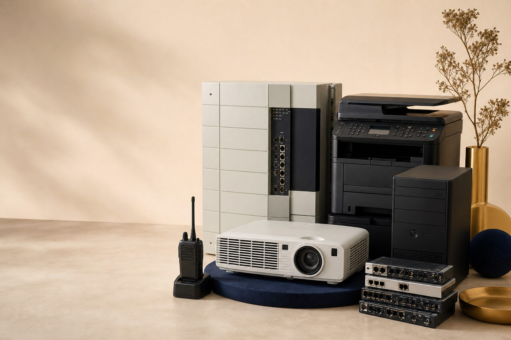

Panasonic PABX
Unit telepon kantor, sentral PABX, dan perangkat komunikasi kantor sejenis.
Menerima alat-alat bekas kantor
Raihan Com membeli Panasonic PABX, printer, CPU/Desktop, proyektor, HT/radio komunikasi, dan perangkat elektronik kantor lain. Penilaian wajar, komunikasi jelas, transaksi nyaman.

Kami membantu perusahaan, kantor, sekolah, maupun instansi yang ingin melepas aset elektronik bekas dengan cara lebih praktis. Setiap barang dicek kondisinya, dinilai sesuai kelayakan, lalu diproses dengan komunikasi terbuka sejak awal.
Objek yang diterima
Tidak perlu menebak kategori. Berikut daftar utama berdasarkan informasi Raihan Com.
Unit telepon kantor, sentral PABX, dan perangkat komunikasi kantor sejenis.
Printer kantor bekas, unit cetak, dan perangkat pendukung yang sudah tidak dipakai.
CPU tower, desktop kantor, dan perangkat komputer bekas dari inventaris kerja.
Proyektor presentasi, perangkat meeting room, dan perlengkapan audio visual kantor.
Handy talky, radio komunikasi, dan perangkat komunikasi lapangan/kantor.
Alat elektronik kantor lain dapat dikonsultasikan dengan mengirim foto dan kondisi barang.
Cara kerja
Kirim foto, jumlah unit, lokasi umum, dan kondisi singkat melalui kontak resmi.
Barang dicocokkan dengan kategori yang diterima: PABX, printer, CPU, proyektor, HT, dan lainnya.
Obrolan lanjut dilakukan langsung agar harga, jumlah, dan jadwal bisa jelas.
Jika cocok, lanjut atur waktu pengambilan atau pengecekan sesuai kebutuhan.
Punya beberapa unit sekaligus? Kirim foto dan daftar barangnya, nanti dibantu cek awal.
Siapkan Info PenawaranKenapa dibuat simpel
Kontak utama sengaja disamarkan agar halaman ini aman dipakai sebagai template informasi dan materi share.
Kategori utama ditulis eksplisit agar pengunjung cepat tahu apakah barangnya relevan.
Website ini tidak menampilkan angka, testimoni, atau logo klien yang belum diverifikasi.
Kontak Raihan Com
Untuk versi template publik, nama PIC dan nomor kontak tidak ditampilkan. Saat dipakai untuk campaign final, ganti bagian ini dengan kontak resmi yang sudah disetujui.